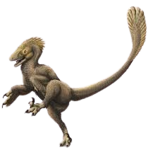
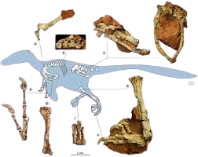
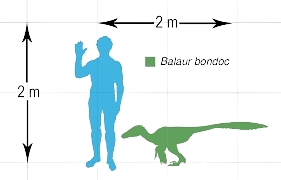
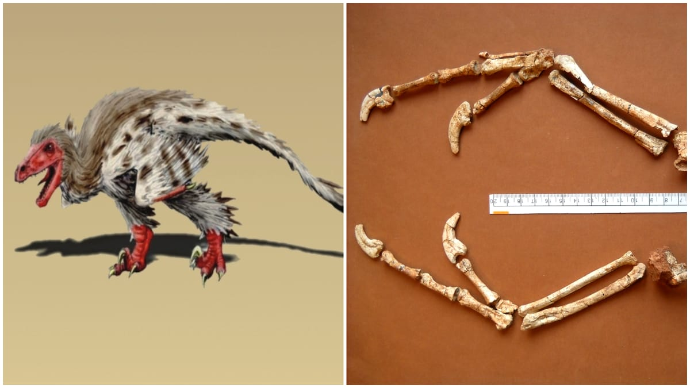

Română
Balaurul, numit de către Zoltan Csikil si alții după denumirea unui dragon din folclorul românesc, se regăsea predominant în România, în regiunea Sebeș. Acestea este un diniozaur de tip carnivor, având o lungime estimată între 1,8 și 2,1 metri și trăia în perioada Maastrichtianul timpuriu din Cretacic. Fosilele care se regăsesc sunt rămășițe parțiale postcraniene.
English
The "Balaur", named by Zoltan Csikil and many others after the name of a dragon from the Romanian folklore, was found predominantly in Romania, in the Sebes region. This is a carnivorous dinosaur, estimated to be between 1.8 and 2.1 meters long, and lived during the early Maastrichtian period in the Cretaceous. The fossils that are found are partial postcranial remains.